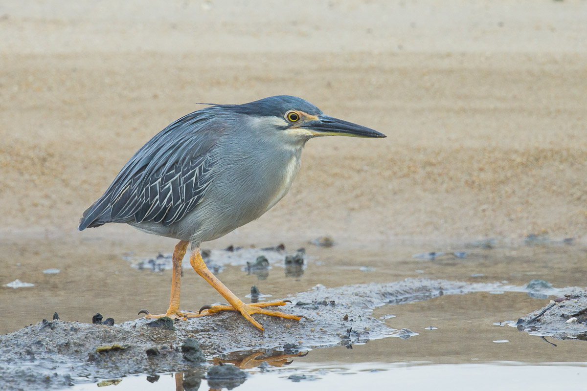

Pasir Ris Park
Birdwatching
Pasir Ris Park is known for being biodiverse and hosting numerous bird species.
Bring down your binoculars and cameras to capture these birds in action!
Where to birdwatch?
If you are looking for the birds of Pasir Ris Park, the best place to start would be the bird watching tower!
Situated beside Sungei Tampines and standing three stories high, the tower gives a splendid view of a variety of birds and is the best place to use your binoculars and cameras. With some luck, you might see the regal White-Bellied Sea Eagle (Haliaeetus leucogaster) in flight!
If you are a plant specialist, try finding trees that are fruiting or in bloom! Can you identify them from far though?

Right below the birdwatching tower is the mangrove boardwalk of Pasir Ris. Keep your eyes peeled and you may see
some spectacular birds like the White-Collared Kingfisher (Todiramphus chloris), the Striated Heron
(Butorides striata) and the Mangrove Pitta (Pitta megarhyncha).
Click here to find out more about the boardwalk.
Birds in Pasir Ris
White-Bellied Sea Eagle (Haliaeetus leucogaster)
Look out for this majestic sea eagle soaring in the air when you are at the park. Adults can be easily identified by the white head, rump and underparts with black flight feathers.
You might just spot the famous pair (they are brothers!) off the distance if you are lucky.
Buffy Fish Owl (Ketupa ketupu)
One of the largest owl species in Singapore, these critcally endangered owls have distinct ear tuffs on the sides of the head. Look closely and you might find "One-eyed Jack" (named by local park-goers), a male Buffy who lost one of his eye a few years back.
Something interesting about owls in general is that their feathers are structured such that they make no sound when in flight, helping owls become fantastic ambush predators!
Spotted Wood Owl (Strix seloputo)
The largest owl species native to Singapore, they can grow up to half a meter tall!
Pasir Ris Park is home to a pair of loving Spotted Wood Owls who can be seen pruning each other from time to time and raising their young together. Observant parkgoers might just spot little owlets poking out of Bird's Nest Ferns if they can find the lucky fern!
White-collared Kingfisher (Todiramphus chloris)
The most commmon kingfisher in Singapore, the White-collared Kingfisher is coloured bright blue with a distinct white collar that gives it its name.
Besides the distinct plumage, it can also be identifed through its harsh and shrill call that is repeated 4-5 times. The next time you hear such a call, try looking at the branches or in the sky in hopes of seeing the bright blue kingfisher!
Striated Heron (Butorides striata)
A bird commonly spotted near water bodies in Singapore, the Striated Heron boasts a beautiful blue-grey plumage and bright yellow legs.
Typically seen ambushing prey at the water's edge, some bait their prey by dropping a feather or leaf to attract curious and unfortunate fish that swim by to investigate. Incredibly smart, aren't they?
Mangrove Pitta (Pitta megarhyncha)
Wonderfully colourful, the Mangrove Pitta has a black head, brown crown, white throat, greenish upper part, light brown underparts and reddish vent.
While most pittas can be hard to spot in the wild, this particular species has the habit of singing from tall trees in the mangrove, making it easier to spot.